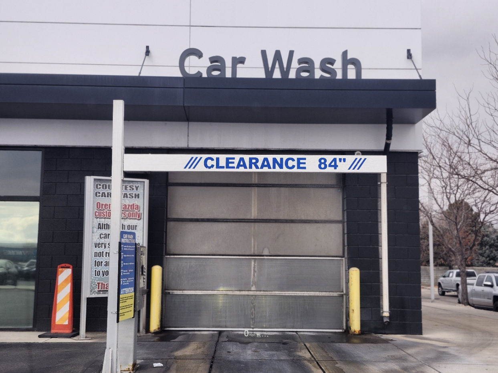
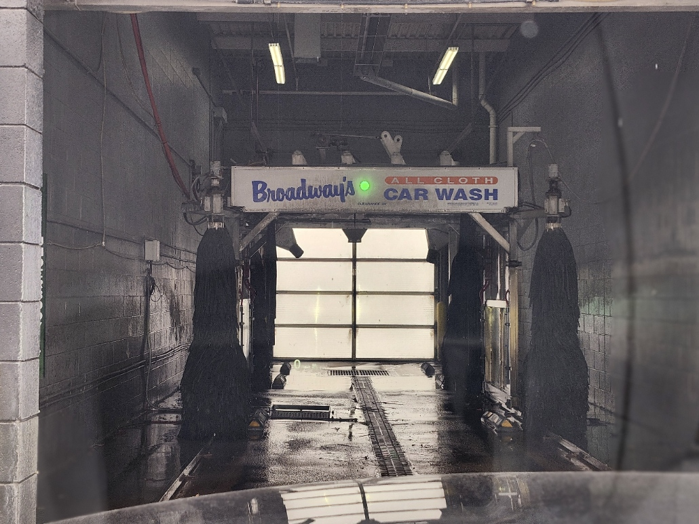
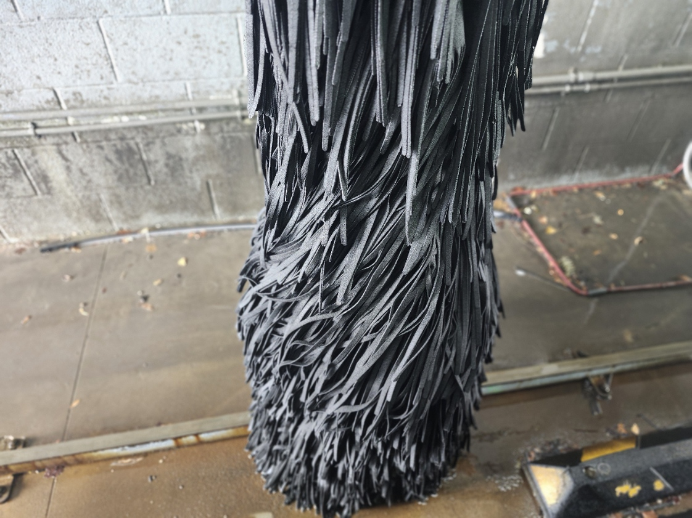
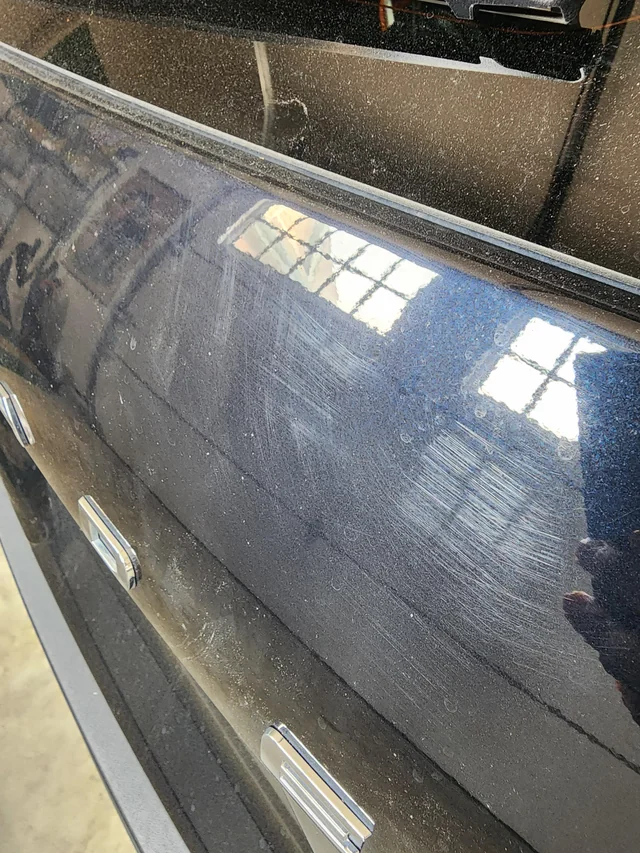

Car Wash VS Detailing
   
The Importance of Hand Washing Your Car: A Pro Detailer's Perspective vs. Automated Car Washes
As a car enthusiast or someone who simply takes pride in their vehicle, you’ve likely found yourself debating whether to take your car to an automated car wash or have it professionally hand washed. While automated car washes may seem like a time-saver, there are significant differences that directly impact the health of your vehicle’s paintwork. As a professional detailer, I’ve seen firsthand how automated car washes can leave behind micro-scratches and swirl marks that damage your vehicle’s clear coat. Here’s why hand washing is the superior option for preserving your car’s finish.
The Problem with Automated Car Washes: Micro Scratches and Swirl Marks.
Automated car washes typically use rotating brushes or cloth strips that scrub the surface of your vehicle at high speeds. While they may appear to get the job done, these car washes actually put your car’s paint at risk. Over time, the brushes used in these systems can cause micro-scratches and swirl marks on your clear coat—small imperfections that are often visible in direct sunlight. These scratches may not be immediately noticeable, but they accumulate over time, leaving your car’s finish looking dull and worn.
These swirl marks are caused by the friction between your car’s paint and the brushes in the automated wash. But it’s not just the brushes themselves that are a problem. Car wash brushes often collect dirt, small rocks, and other debris from previous vehicles, which can scratch and damage your car’s surface. Imagine your car being cleaned with the remnants of dirt from hundreds, if not thousands, of other vehicles. That dirt and debris is transferred back onto your car’s finish, further compounding the problem.
Hand Washing: The Professional Detailer's Approach
When it comes to hand washing, professional detailers take a much more careful, methodical approach. The primary benefit of hand washing is that it allows for total control over the cleaning process. As a detailer, I use specialized tools and techniques to ensure that every inch of the car is cleaned without causing damage. Here are a few key advantages to hand washing:
- Gentle on the Paint: The key to hand washing is using the right tools and techniques. We use soft microfiber towels, high-quality car wash soap, and foam sprayers to gently lift dirt away from the surface without rubbing it into the paint. Unlike car wash brushes, these tools are specifically designed to clean your car while minimizing the risk of scratching.
- Attention to Detail: As a professional detailer, we take the time to assess your vehicle’s needs and clean it properly. We pay special attention to areas that automated washes often miss, like wheels, tires, and seams where dirt and grime can build up. The goal is not just to clean but to protect and enhance your car’s finish.
- Restoring Your Car’s Finish: A hand wash is often the first step in the detailing process. After a thorough wash, a professional detailer can use additional services like paint correction, waxing, or sealing to restore and protect your vehicle’s paint. These services help remove minor imperfections, like swirl marks, and create a glossy, long-lasting finish that will make your car look as good as new.
- Safe from Contaminants: The likelihood of dirt and debris being transferred from one car to another is eliminated when hand washing. A professional detailer uses fresh, clean water and tools for every wash to ensure no harmful contaminants are introduced to your vehicle’s surface. This minimizes the risk of scratches or paint damage.
- Preserving the Clear Coat: Your vehicle’s clear coat is its first line of defense against the elements, but it’s also the most vulnerable to damage. Automated car washes wear down the clear coat over time, which can lead to fading and deterioration. By hand washing your vehicle with care, detailers can help preserve the integrity of the clear coat and extend the life of your paint job.
A Long-Term Investment in Your Car’s Appearance
While an automated car wash might seem like an easy and affordable option, it’s important to consider the long-term consequences of damage to your vehicle’s paint. The micro-scratches and swirl marks left behind by car wash brushes are not just cosmetic—they can degrade the quality of your car’s clear coat and reduce its resale value. In contrast, a professional hand wash and detailing service helps maintain the pristine appearance of your vehicle, protecting its value and ensuring it continues to turn heads for years to come.
Conclusion: Hand Washing is the Clear Winner
When it comes to preserving the appearance and health of your car’s paint, hand washing by a professional detailer is the way to go. Automated car washes may be convenient, but they come with significant risks that can cause long-term damage to your vehicle. By choosing a hand wash, you’re not only ensuring a cleaner car but also protecting its finish from swirl marks, scratches, and other imperfections.
If you want to keep your car looking like new, invest in a professional hand wash and detailing service. It’s worth the time, effort, and cost to bring your vehicle back to life and ensure it stays looking its best for years to come. After all, your car deserves the best!